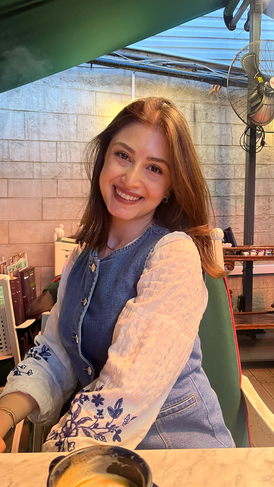
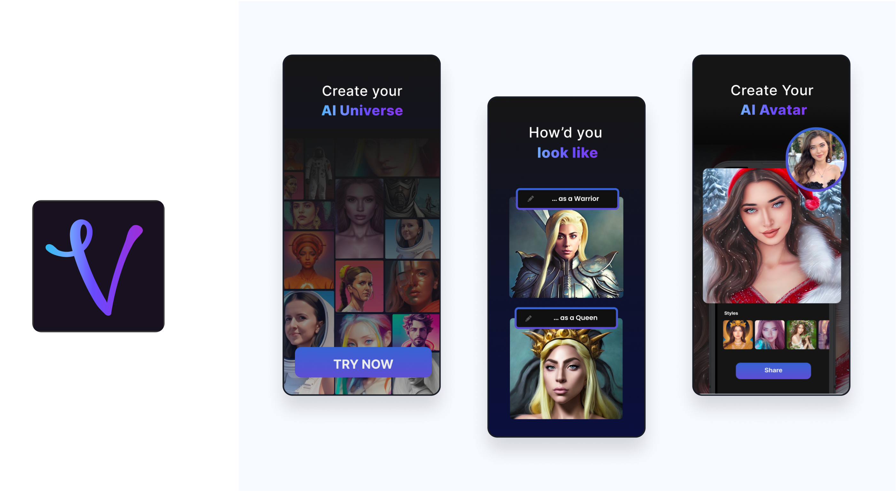
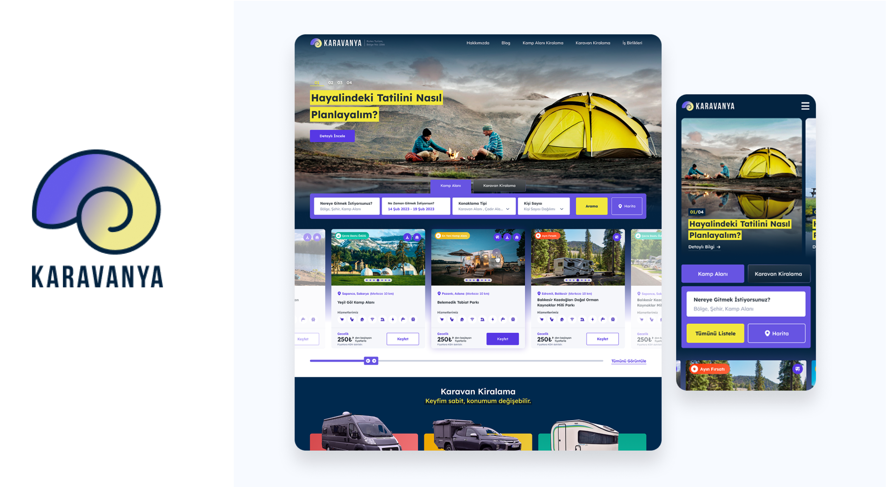
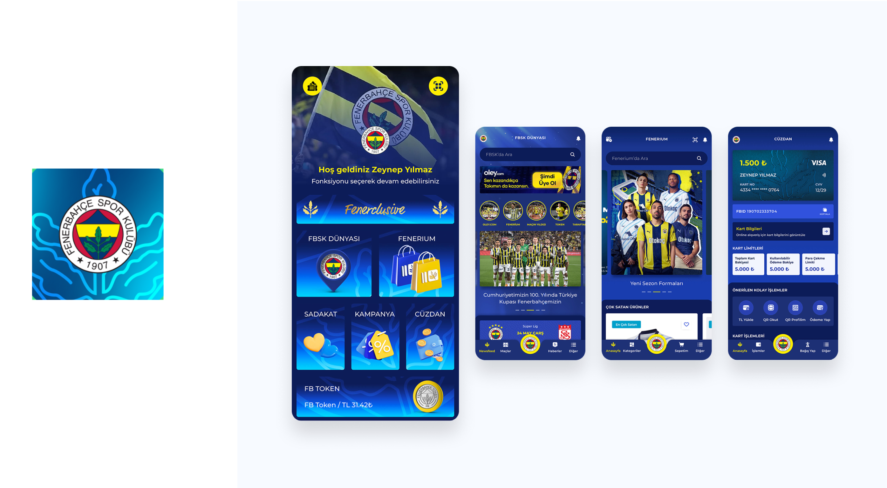
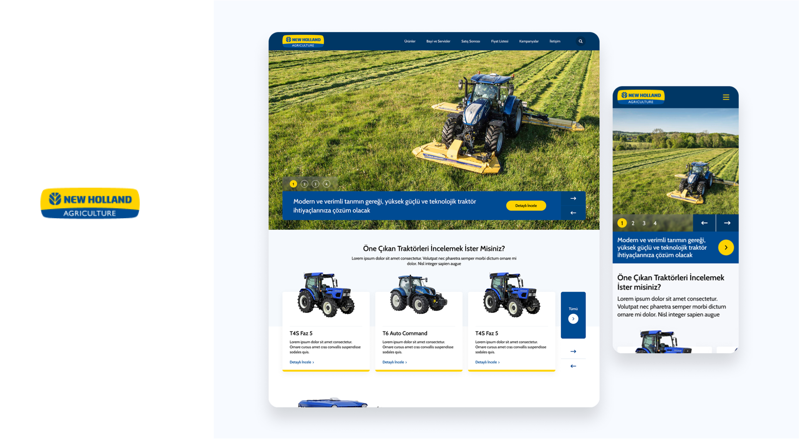
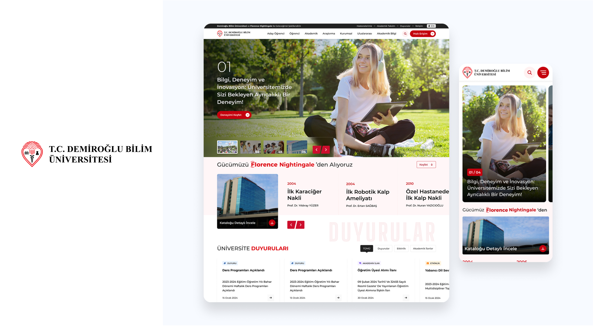
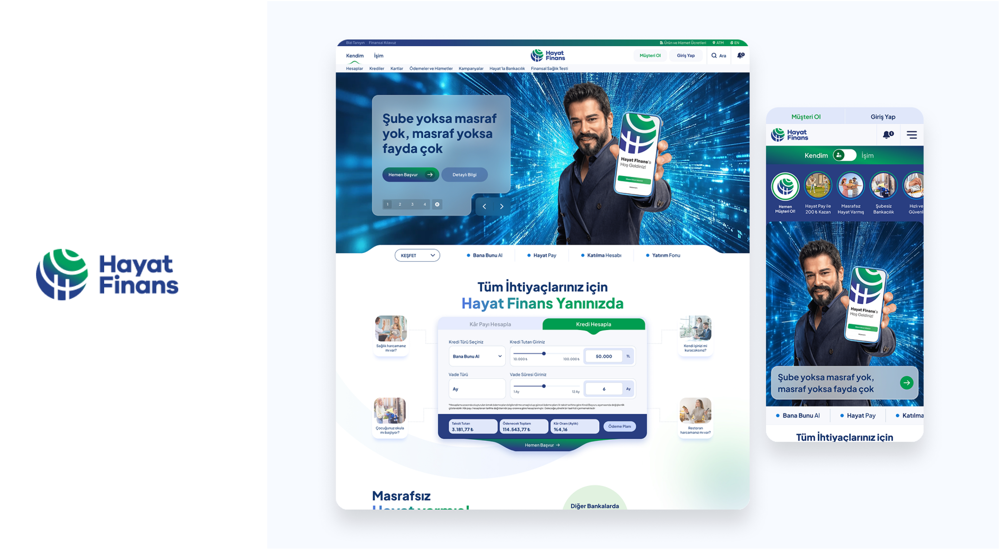

I'm a UI/UX designer,
I design user-friendly digital experiences by turning complex processes into simple, intuitive interfaces.
My focus is on research-driven design, usability, and creating systems that scale.

I actively contributed to the visual identity of this project, ranging from designing the app icon to creating the promotional store visuals for App Store.
Additionally, I was involved in UI design and the creation of in-app visual assets to deliver a user-friendly experience.

As part of a team,
I took on the task of improving the user experience (UX) and user interface (UI) for the Karavanya.
I began the project by conducting moodboard and benchmark analyses, and then completed the designs for critical screens such as campsite and caravan rentals, as well as login and sign-up flows.

I took on an active role in the end-to-end interface design for the Fenerbahce Super App, and I continue to contribute to its ongoing development.
My responsibilities included:
Initial Research: I started the process with comprehensive benchmark analysis and moodboard creation.
User Interface Design: I designed the interface to be consistent with the brand's identity and Super App standards. I worked on all core elements of the application, including the critical modules, empty states, and alert pop-ups.
Store Visuals: I was also responsible for creating the App Store and Google Play Store visuals to ensure a strong first impression.

I was responsible for the User Interface (UI) and User Experience (UX) design of New Holland Agriculture's digital platform.
Interface Design: I created the header, footer, slider, and menu designs to provide a modern and user-friendly experience that aligned with the brand's identity.
Mobile Optimization: I applied responsive design principles to ensure the layouts worked seamlessly on all devices.

As a member of the team,
I supported the improvement of the user experience (UX) and user interface (UI) for the Demiroğlu Bilim University website.
I redesigned the information architecture to ensure students could find the information they needed more quickly. I enhanced the user experience by designing on-site modules (including the faculty location module, detail pages, and forms) and creating visuals for the website. My work also included ensuring the designs were optimized for mobile responsiveness.

In designing the Hayat Finans website,
I focused on highlighting the bank's key features. After completing the benchmark analysis and information architecture work,
I designed critical areas like the 'Masrafsızlık Modülü' and solutions that improved the user experience.
This included pop-ups, quick-access modules, QR code-supported app redirection modules, and financial calculation tools.